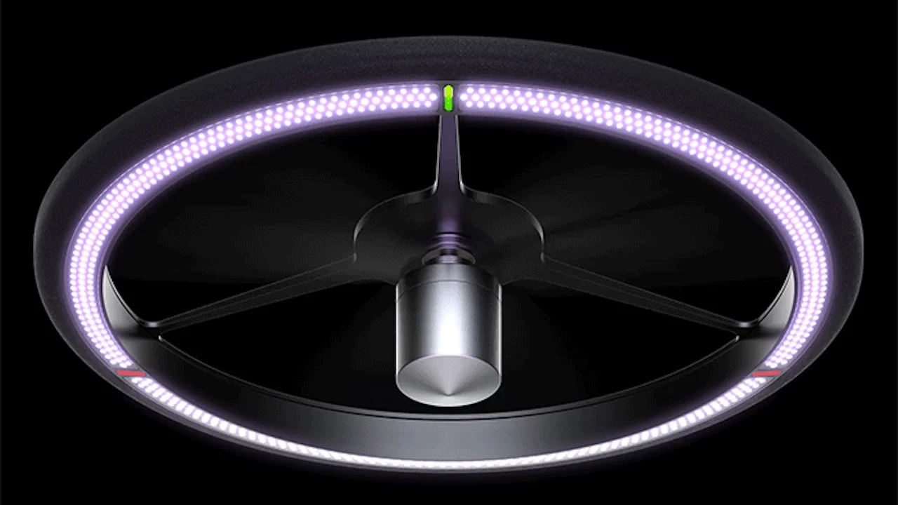
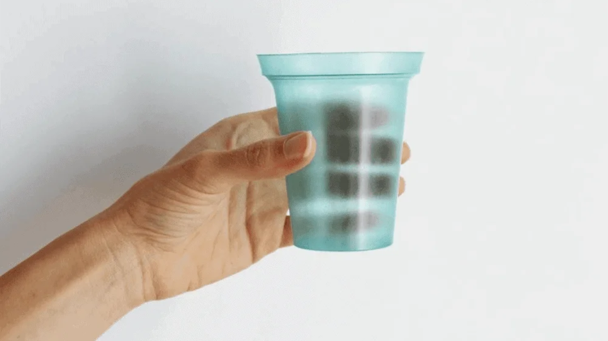
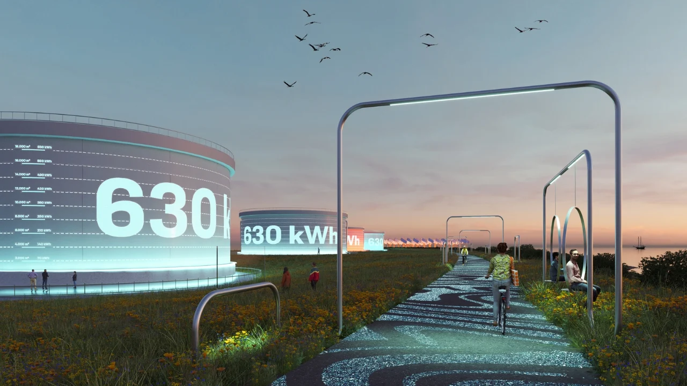

About me
Introduction
As we step into 2034, I'm excited to share my journey and the work I've been dedicated to over the past decade. With a strong foundation in Computer Science and a deep commitment to sustainability, I've focused on inventing and implementing technologies that drive positive environmental change and improve quality of life globally.
Education and Early Career
I graduated with a BSc in Computer Science under University of London in 2026, where I laid the groundwork for my career in technology. My early projects centered around sustainable solutions, which sparked my lifelong passion for environmental innovation. Over the years, I have continuously expanded my knowledge and skills, keeping pace with the rapid advancements in technology and sustainability.
Achievements and Innovations
In the past decade, I have been fortunate to work on several groundbreaking projects that reflect my commitment to sustainability and innovation. Here are some highlights:
Solar-Powered Air Purification Drone:

Biodegradable Smart Packaging:

Smart Energy Management System:

Solar-Powered Air Purification Drone: Designed and developed an autonomous drone powered by solar energy to purify air in polluted urban areas, significantly improving air quality and public health.
Biodegradable Smart Packaging: Created innovative packaging material embedded with sensors to monitor food freshness, made from organic materials that decompose naturally, reducing plastic waste and food spoilage.
Smart Energy Management System: Developed a system that optimizes energy consumption in buildings using IoT sensors and AI algorithms, resulting in significant energy savings and reduced carbon footprint.
View more
Vision and Impact
My vision for the future has always been to harness the power of technology to create a sustainable world. Over the past decade, my work has focused on:
Reducing Carbon Emissions: Through innovative renewable energy projects and smart grid technologies, I've contributed to significant reductions in global carbon emissions.
Promoting Circular Economy: By developing biodegradable materials and advocating for sustainable manufacturing practices, I've helped industries transition to more sustainable models.
Empowering Communities: My projects in self-sustaining communities and smart cities have provided scalable solutions that enhance the quality of life and resilience of urban and rural areas alike.
Looking Forward
As I look to the future, I remain committed to exploring new frontiers in sustainable technology. My goal is to continue creating solutions that address the world's most pressing environmental challenges while inspiring the next generation of innovators. I believe that with collaboration, creativity, and a shared vision, we can build a sustainable, prosperous future for all.
Get in Touch
I am always eager to connect with fellow innovators, environmentalists, and anyone passionate about sustainability. If you are interested in my work, have collaboration ideas, or simply want to discuss the future of sustainable technology, please reach out. Together, we can make a lasting impact.